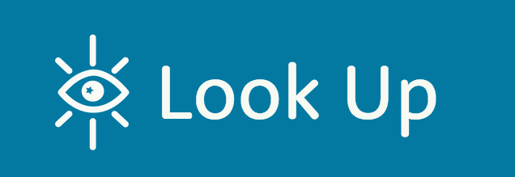

Logos
The name and logo exploration for Look Up was created by making a morphological matrix of common imagery and icons associated with mentors and stars. After combining elements and sketching them in Illustrator, the mark that combined an eye and a star represented the company well.
Small Logo
Full Size Logo
Icons
The icons were created in Illustrator and reflect the star/space theme. All icons are saved and used as svgs. The icon set is primarily used in the navigation, but is also used sparingly and at a larger size on the landing page.
Navigation Icon Set

Large Icons
Used on the landing page with a width of 200px.
Profile Icon
Used for user profiles as a placeholder until they upload their own photo. Width is 120px.